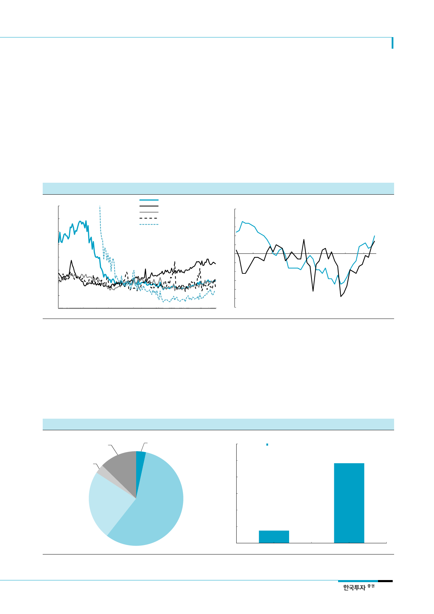

두산밥캣(241560)
III. 유럽: 바닥 다진 업황, 구조조정 효과 나올 시기
유럽 업황 반등할 것
Caterpillar retail 지표도
반등하기 시작
1. 산업은 바닥을 다지고 반등 기회 엿보는 중
전체 매출에서 약 30%를 차지하는 유럽 판매량도 바닥을 다지고 반등의 기회를 엿보고
있다. Eurostat이 발표하는 유럽 주택착공 인덱스가 바닥을 다지고 상승하고 있다. 유로
존 건설투자도 15년 들어 회복세로 전환됐고 EU 주요국인 독일, 프랑스, 영국의 주택가
격지수도 상승하고 있다. 특히 Caterpillar가 발표하는 건설기계 월간 retail 판매량을 보
면 유럽지역에서 올해 하반기부터 판매량(heavy, compact 합산)이 늘어나고 있다.
[그림 15] 유럽주택착공 인덱스
(2010=100)
400
350
300
250
200
150
100
50
0
Jan-05
Jan-07
Jan-09
자료: Eurostat, 한국투자증권
Jan-11
[그림 16] Caterpillar가 공개하는 월간 retail 판매량 YoY 증가
유럽 주택착공 인덱스
독일
프랑스
벨기에
스페인
Jan-13 Jan-15 Jan-17
(% YoY, 3MMA)
25
20
15
North
America
10
5
0
EMEA
(5)
(10)
(15)
(20)
(25)
(30)
Jan-14 Jul-14 Jan-15 Jul-15 Jan-16 Jul-16 Jan-17 Jul-17
주: EAME – 유럽, 아프리카, 중동
자료: Caterpillar, 한국투자증권
유럽은 MEX 시장 위주
유럽시장은 북미시장과는 달리 compact 건설기계 시장에서 MEX의 시장규모가 CTL과
SSL대비 월등하게 크다. 2015년 기준 전체 compact 시장의 57%를 MEX가 차지한다. 밥
캣은 북미 MEX 시장에서 시장점유율 23.7%로 1위를 기록하고 있지만 유럽시장에서는
7.6%, 4위로 부진했다. 유럽시장에서 MEX는 주택건설뿐만 아니라 인프라투자 등에도 많
이 쓰여 heavy 제품 판매량 추이와 연관성이 높다. 즉 Caterpillar retail 판매량 증가로부
터 MEX 판매량도 늘어나고 있음을 유추할 수 있다.
[그림 17] 유럽 compact 시장 제품별 비중(2015년) – MEX가 중요
(대)
CWL, 10,609,
13%
SSL , 2,843,
3%
BHL, 2,584,
3%
[그림 18] 밥캣의 유럽 시장점유율(2015년) – MEX 점유율 부진
(%)
60
시장점유율
50
48.3%, 1위
40
TLS, 19,805,
24%
30
20
MEX, 47,909,
57%
10
7.6% 4위
자료: Off-Highway Research, 한국투자증권
0
MEX
SSL
자료: 한국투자증권
7